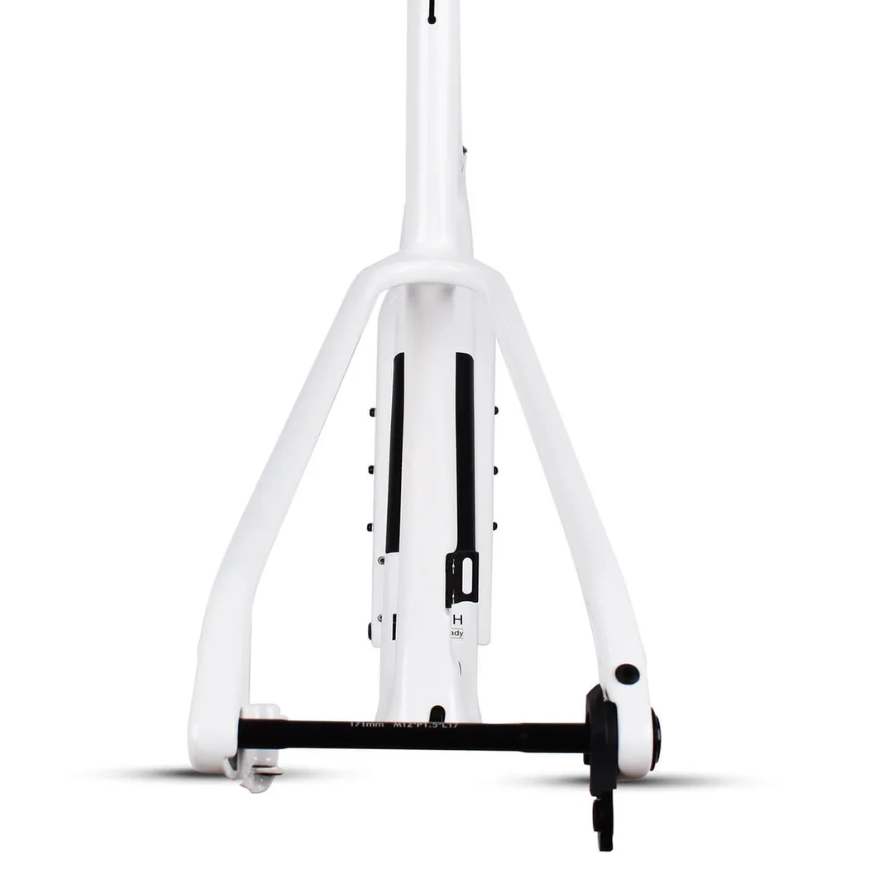
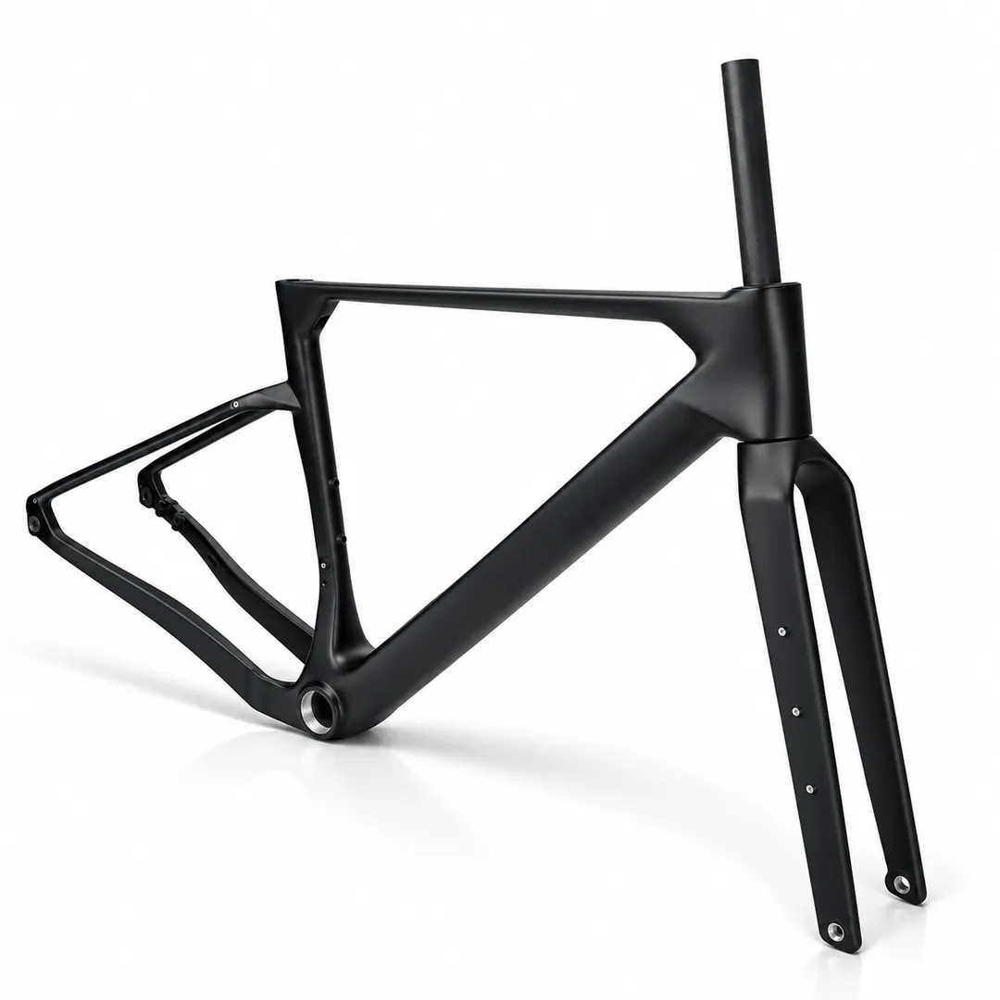
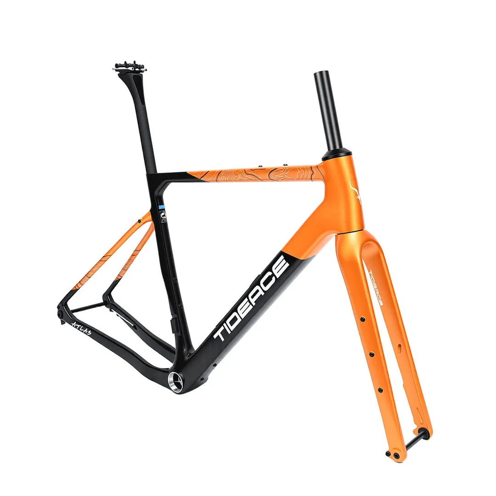
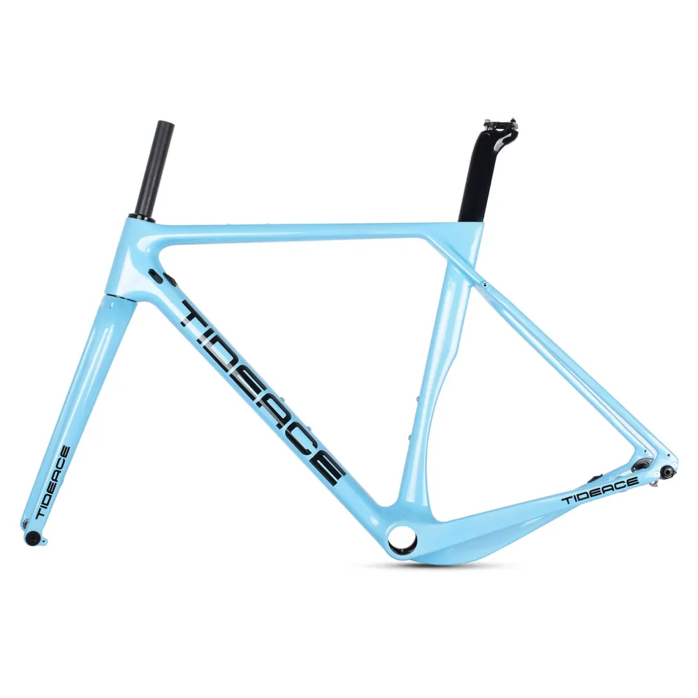
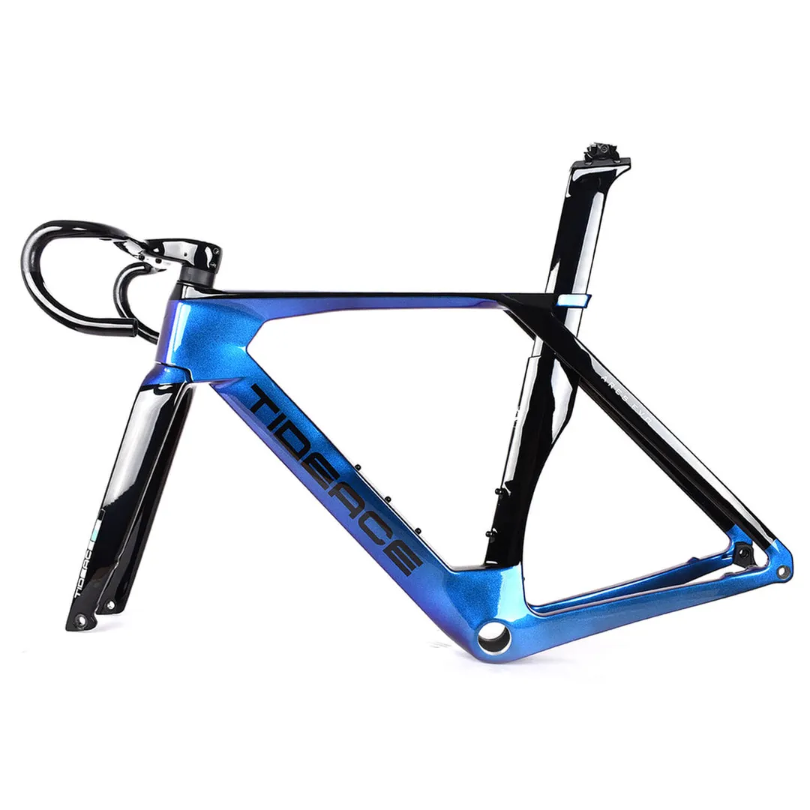

FM‑GV201
До 700 × 50 мм, резьбовая каретка T47 и UDH. Для рыхлого грунта с более широкой резиной сравните её с GV208.
Спецификация GV201Параметры рам, фотографии производителя и новости бренда.
Производитель заявляет зазор до 700 × 57 мм, вес рамы 1 050 ± 50 г и каретку T47 с шириной стакана 85,5 мм. В нижней трубе есть отсек для инструмента. Сзади установлен держатель переключателя UDH.
Перед сборкой проверьте фактическую ширину покрышки на вашем ободе и оставьте запас на грязь. Уточните допустимый диаметр тормозных роторов для вашей версии комплекта.
Спецификация FM‑GV208 у Tideace

До 700 × 50 мм, резьбовая каретка T47 и UDH. Для рыхлого грунта с более широкой резиной сравните её с GV208.
Спецификация GV201
В карточке фреймсета указан размер до 700 × 47 мм. В блоге о версии 2026 встречается 50 мм. До покупки уточните зазор для конкретной партии.
Карточка CR060 · Материал о версии 2026
До 700 × 40 мм или 27,5 × 2,1″. На этой раме каретка BB386, поэтому при переносе трансмиссии с GV201 проверьте совместимость.
Спецификация CX072Для CR068 производитель указывает покрышки до 700 × 32 мм, резьбовую каретку T47 и фирменный подседельный штырь. Окрашенная рама размера S заявлена на 1 100 г без металлических деталей.
При заказе проверьте размер руля в комплекте и доступность сменного подседельного штыря.
Спецификация CR068
Tideace выпустила подборку карбоновых рам к ноябрьской распродаже. Актуальные цены и наличие указаны на сайте производителя.
Публикация TideaceПроизводитель рассказал о применении своих карбоновых аэролежаков на чемпионате России.
Публикация TideaceВ материале о новой версии производитель выделил отсек в нижней трубе, каретку T47 и держатель переключателя UDH.
Публикация Tideace